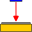

Simple Sensitivity Analysis¶
Calculates the planar sensitivity of each collimator in counts per second per becquerel of a Gamma Camera image. To use a background image open it as the reference image. The analysis can be opened by clicking the  button on the Nuclear Medicine Tool Bar or by selecting ‘Simple Sensitivity’ from the Nuclear Medicine analysis menu.
The ‘Activity’ and ‘Nuclide’ can be set in the ‘Simple Sensitivity’ group in Simple Sensitivity.
Please see Simple Sensitivity in the Pylinac documentation for more information.
 Currently this test does not handle multiframe images such as those from a dual head camera well. The background images are averaged. As a workaround save the multiframe image and background as separate image series (see Save All) and then load the separate image with its corresponding background for analysis.
Currently this test does not handle multiframe images such as those from a dual head camera well. The background images are averaged. As a workaround save the multiframe image and background as separate image series (see Save All) and then load the separate image with its corresponding background for analysis.